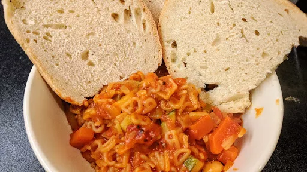

Italian vegetable soup
45 mins
Serves 8
Vegetarian

Ingredients
- 2 onions, chopped
- 2 carrots, chopped
- 4 sticks celery, chopped
- 1 tbsp olive oil
- 1 tbsp caster sugar
- 4 cloves garlic, finely crushed
- 2 tbsp tomato puree
- 2 bay leaves
- few sprigs thyme
- 3 courgettes, chopped
- 400 g can butter beans
- 400 g can chopped tomatoes
- 1⅕ litres vegetable stock
- 100 g Parmesan cheese, grated
- 140 g small pasta shapes
- small bunch basil, shredded
- crusty bread, to serve
Instructions
- Gently cook the
onions2
, carrots2
and celery4 sticks
in the oil1 tbsp
in a large pan for 20 minutes until soft. Splash in some water if they stick. Add the sugar1 tbsp
, garlic4 cloves
, tomato puree2 tbsp
, herbs and courgettes3
, and cook for 4-5 minutes on a medium heat until they brown a little.
- Tip in the
beans400 g can
, tomatoes400 g can
and stock1⅕ litres
, then simmer for 20 minutes. Add half of the cheese100 g
and the pasta140 g
and simmer for 6-8 minutes until the pasta140 g
cooked. Sprinkle with basil small bunch
and the remaining cheese100 g
and serve with hunky of crusty bread.
-
kcal
215
-
fat
6 g
-
saturates
3 g
-
carbs
30 g
-
sugar
12 g
-
fibre
5 g
-
protein
11 g
-
salt
1.06 g
BBC Good Food: Low-fat Feasts
Short Link
Long Link